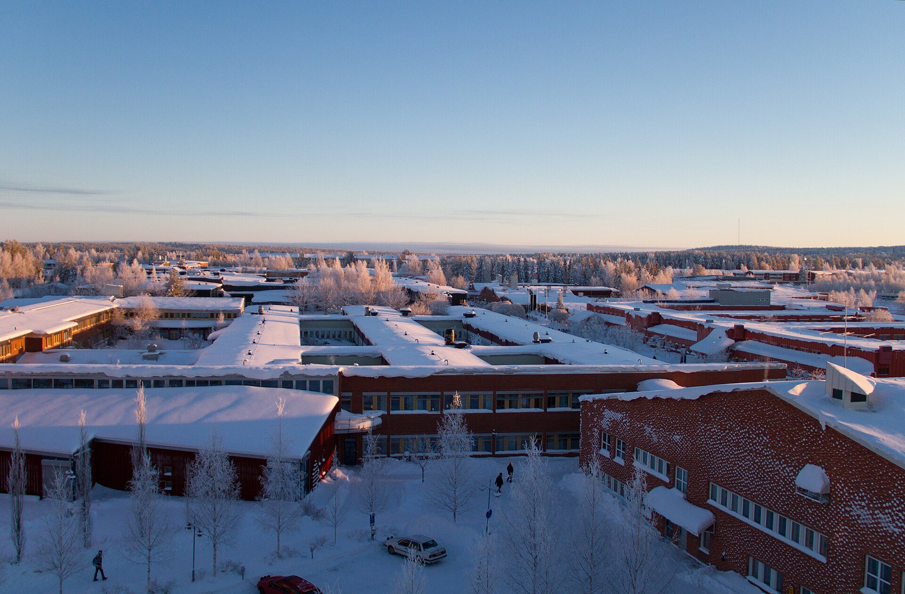
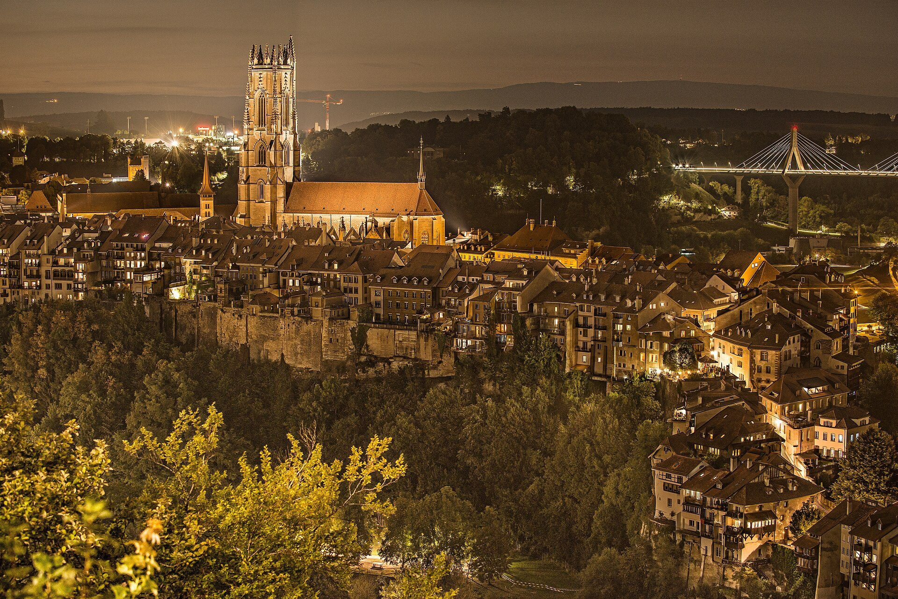
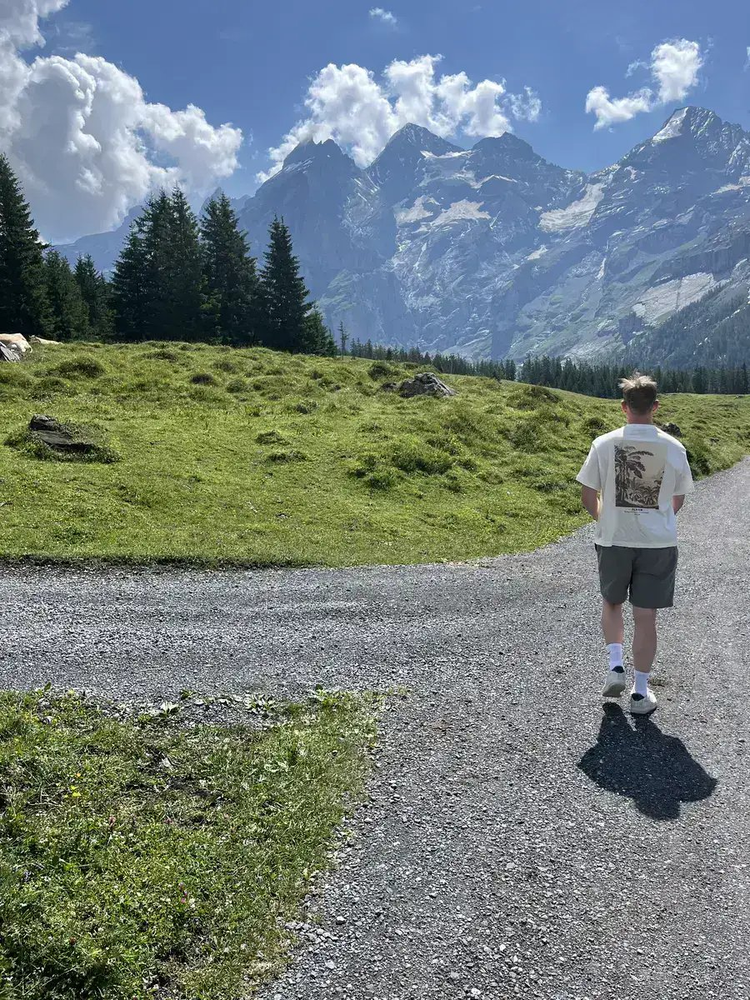
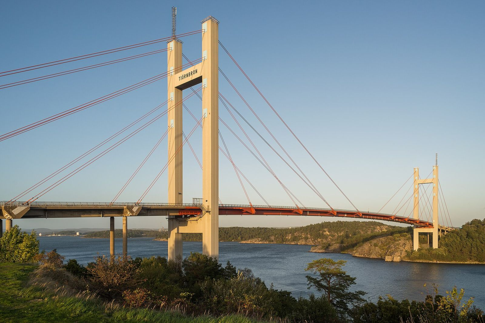
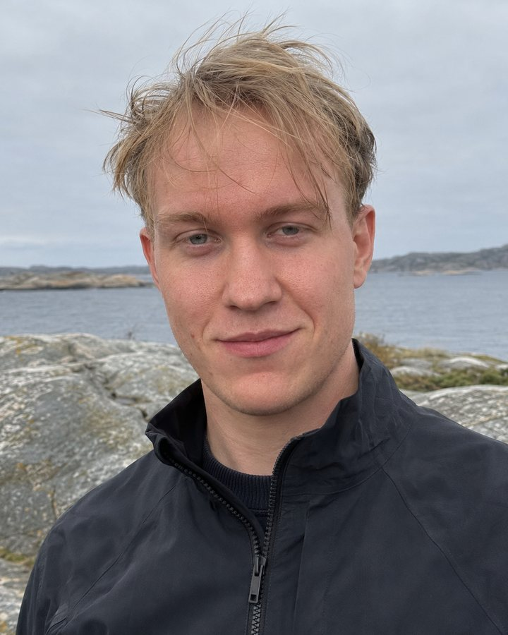

Hej! I'm Olle
Engineering physicist from Sweden.

Luleå
2019–24
Five years of physics and snow. MSc in Engineering Physics at Luleå University of Technology, far north Sweden.

Fribourg
2024–26
Research at the Adolphe Merkle Institute, University of Fribourg. Lasers, confocal microscopes, and optical tweezers that hold one protein at a time.
My laser
A real scan from the lab, filled in point by point in the order the microscope took it. The faint ring is an Airy pattern.
- Date
- 2025-10-09
- Points
- 40 × 40, 50 nm each
- Field
- 2 µm
- Beam width
- σ ≈ 285 × 313 nm

2026
Then I leftthe labto build withAI

Tjörn
Now
An island on the Swedish west coast. Sea, smooth granite and a lot of wind.

Press
Olle Dyberg is a Swedish engineering physicist who makes content on AI as @olleai. He has an MSc in Engineering Physics from Luleå University of Technology, did laser research at the Adolphe Merkle Institute in Fribourg, Switzerland, and left a PhD position in 2026 to build with AI. His videos have 4.4M views on TikTok and 476K on YouTube (Nov 2026). He is building Klippt, a recording and editing app, and lives on Tjörn on the Swedish west coast.
Olle Dyberg är civilingenjör i teknisk fysik från Luleå tekniska universitet och gör innehåll om AI som @olleai. Han forskade på lasrar vid Adolphe Merkle-institutet i Fribourg i Schweiz och lämnade en doktorandtjänst 2026 för att bygga med AI. Hans videor har 4,4 miljoner visningar på TikTok och 476 000 på YouTube (nov 2026). Han bygger Klippt, en app för inspelning och redigering, och bor på Tjörn på västkusten.